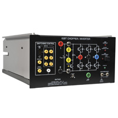
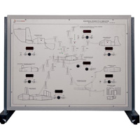
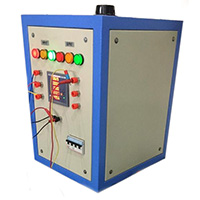
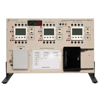

Current
Personal Lab
This is a privately owned facility housed within a dedicated section of a family-owned chamber. The lab is primarily used for personal projects and is equipped with essential electrical tools for experimentation and prototyping.
Equipment list
| Image | Name | Follow-up |
|---|---|---|
| DSO138 2.4" TFT Pocket-size Digital Oscilloscope | Datasheet | |
| XR2206 High Precision Function Generator Signal Generator | Datasheet | |
| ZYBO Zynq-7000 ARM/FPGA SoC Development Board | Datasheet | |
| NAMUNY DC 12V TO AC 0-220V-330V-380V-420V Inverter (20KHz,1000W) | - |
Location: H#1, Block#E, Banasree, Rampura, Dhaka - 1219
Actions: Request-Access
Previous
Machine Lab, IICT Building, SUST
As an undergraduate research assistant, I had the privilege of working in SUST's sophisticated "Machine Lab," one of the premier research facilities in the EEE department. The Machine Lab in the IICT Building at Shahjalal University of Science and Technology (SUST) is a specialized facility dedicated to the study and experimentation of electrical machines and power systems. Equipped with a variety of essential components such as motors, alternators, inverters, power system simulator and high-voltage AC/DC power supplies, the lab provides students and researchers with hands-on experience in analyzing and operating electrical machinery.
Equipment list *
| Image | Name | Follow-up |
|---|---|---|
|  | IGBT Chopper/Inverter (8857-15) | Datasheet |
|  | Production, transmission and use of electric power simulator | Datasheet |
|  | Variable Transformer: Input - 220V AC; Output - 5 to 450V AC | - |
|  | Monitoring of electric parameters with data networks trainer | Datasheet |
Location: Level-3, IICT Building, Shahjalal University of Science and Technology, Sylhet - 3114
* only partial data is displayed